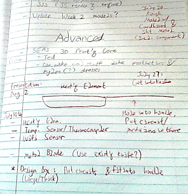

<h1>Chosen Idea</h1>
<ul>
<li>Food-Heating Knife</li>
</ul>
<h1>Images</h1>
<p>
</img></p>
<p></img></p>
I have some notes from a discussion with a teacher assistant, who liked my knife idea the most; they detail what I need and how I should implement this idea. This should be doable.
<h1>Required Materials</h1>
<p>I found some prices online, but take them with a grain of salt in case of there being cheaper alternatives, etc.</p>
<ul>
<li>Wood</li>
<li>Acryllic</li>
<li>A heating element (PTC/Aluminum shell: $20.69) (Silicon: $64.30)</li>
<li>A Wi-Fi sensor ($139)</li>
<li>Thermocouple/Thermistor ($16/$13.79, respectively)</li>
<li>Circuit components</li>
</ul>
<h1>Timeline</h1>
<ul>
<li>July 10: Make a Fusion 360 model of the project.</li>
<li>July 19: Make a cardboard/sheet metal prototype to understand the component configuration.</li>
<li>July 25: Assemble & Code the final project.</li>
<li>August 2: Presentations</li>
</ul>
<p>
Back to the <a href="../index.html">main page</a>.</p>